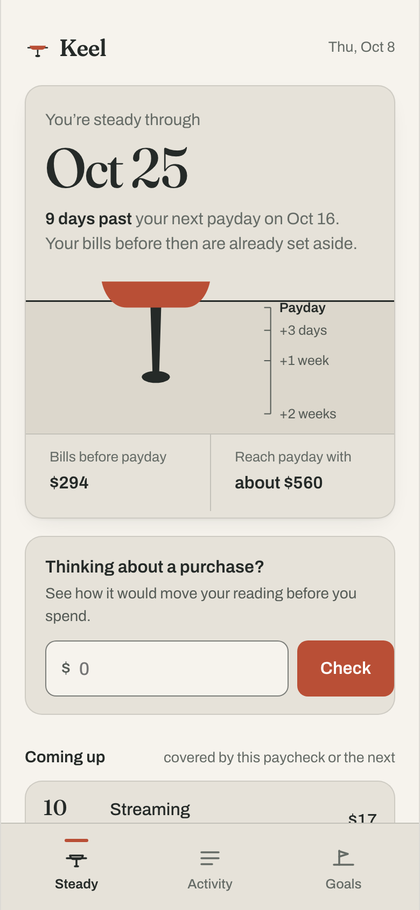
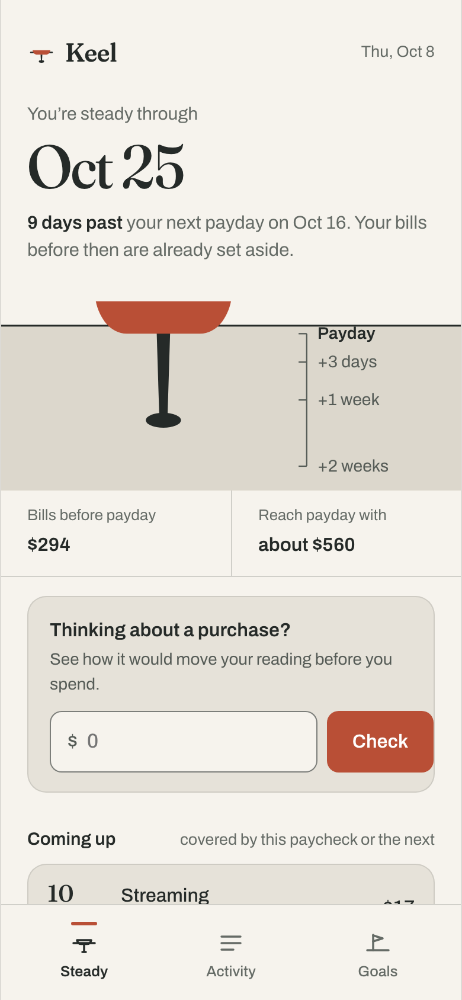

A budgeting app that tells you you’re okay before it tells you anything else.
Keel is a personal finance concept built on one idea: confidence with money comes from steadiness, not restriction. This is the full process behind it, from the research that shaped the idea to a working prototype, with the visual and motion system designed alongside the product rather than after it.
- Role
- Everything, solo: research review through prototype
- When
- October 2026, self-directed
- Made with
- HTML, CSS, JS, Lottie JSON written by hand, Python for audits
- Status
- Concept and prototype. Not tested with users yet
A keel is the part of a boat you never see. It doesn’t stop the waves. It keeps you upright through them.
Every decision below traces back to that sentence: what the home screen leads with, what the app refuses to show in red, the palette, the pacing of the motion, and the one shape the whole system is built from.
The problem: budgeting apps meet hard weeks with red numbers
Most budgeting tools are built around limits. Categories get ceilings, progress bars fill up and change color, and an alert arrives when you go over. That design assumes the problem is missing information. The research on money and emotion points somewhere else: people tend to look away from their finances exactly when things get hard.
-
Money stress is the normal state, not the edge case
In the American Psychological Association’s Stress in America survey (fielded August 2014 with 3,068 adults, released February 2015), 72% reported feeling stressed about money at least some of the time in the prior month, and 22% reported extreme money stress.
So a finance app should assume the person opening it is already a little anxious.
American Psychological Association, Stress in America: Paying With Our Health (2015) -
People avoid financial information when they expect bad news
Karlsson, Loewenstein and Seppi named this the ostrich effect. In two datasets, Scandinavian and American investors checked their portfolios more often in rising markets than in flat or falling ones. Later work by Sicherman, Loewenstein, Seppi and Utkus, using account login records, found the same pattern: attention drops after market declines.
So the moment someone most needs a clear picture is the moment they’re least likely to open the app.
Karlsson, Loewenstein & Seppi, The ostrich effect (2009); Sicherman et al., Financial Attention (2016) -
Feeling secure is the goal, not staying under budget
The Consumer Financial Protection Bureau’s research on financial well-being frames it around security and freedom of choice, now and in the future: being in control of day-to-day finances, being able to absorb a shock, and being on track for goals. Its research found that well-being isn’t determined by income alone.
So success should be measured by whether people feel steady, not by whether every category stayed green.
CFPB, Financial well-being: The goal of financial education (2015)
Put together, these sources suggest an uncomfortable inference: if people already avoid financial information when they expect bad news, an app that greets a rough week with red overages is working against its own goal. It teaches people to stop looking. That’s the bet Keel is built on. It’s an inference from published research, not something I’ve measured, and the testing plan in section 8 is designed to check it.
Research: a literature and competitor review
I didn’t run interviews for this project. Instead of inventing users, I did a desk review: what published research says about money and attention, and how four products position themselves.
Competitor notes come from each product’s own public site, published method, or announcements, read in October 2026. I didn’t hold paid accounts in all four, so this is a review of stated positioning and documented patterns, not a hands-on teardown. If I were doing this inside a team, the next step would be interviews with five to eight people who stopped using a budgeting app, which is the group this concept most needs to understand.
What the literature changes about the brief
| Source | What it says | What it means for Keel |
|---|---|---|
| Ostrich effect [2], Financial Attention [3] | Attention to finances goes up with good news and down with bad news. | The home screen has to be safe to open on a bad week. Lead with what’s holding steady, then show what moved. |
| CFPB financial well-being [4] | Well-being is about present and future security and freedom of choice, and it’s partly subjective. | The headline metric should express security over time (“how long am I covered”) rather than a balance or a category total. |
| APA Stress in America [1] | Most adults report money stress at least some of the time. | Default tone is calm. No alarm colors, no shaking error states, no urgency in motion. |
How four products frame the job
| Product | What it centers, in its own words | What it asks of you | What Keel takes, and leaves |
|---|---|---|---|
| YNAB | A method built on four published rules: give every dollar a job, embrace your true expenses, roll with the punches, age your money [5]. Its Age of Money metric is how long, on average, money sits between being earned and being spent [6]. |
Active, regular assignment of every dollar. Real commitment, real payoff for people who stick with it. | Takes: setting aside true expenses first, and the forgiving stance of rolling with the punches. Leaves: the requirement to assign every dollar by hand. |
| Mint | Intuit announced on October 31, 2023 that Mint was going away and members would move to Credit Karma. Credit Karma’s announcement talks about tracking net worth, reviewing spending and monitoring cash flow [7]. |
Little. It aggregated automatically, then categorized. | Takes: a lesson about trust. People who built habits on a tool lost it. Keel would need easy data export from day one. Leaves: category tracking as the main event. |
| Monarch | Budgeting, tracking progress and planning, with a strong emphasis on inviting a partner to see the full picture and budget together, on web, iOS and Android [8]. |
Setting up a full financial picture, ideally with a partner. | Takes: shared visibility as a future direction for households. Leaves: breadth as the headline. Keel leads with one answer, not a dashboard. |
| Copilot Money | “Your money, beautifully organized”: automatic tracking of accounts, spending and investments, with AI that tags transactions, on Apple platforms and the web [9]. |
Very little day to day. Review and correct. | Takes: a high craft bar. A calm product still has to feel considered. Leaves: organization as the promise. Keel’s promise is reassurance. |
The gap
In the material I reviewed, the headline is usually a balance, a remaining budget, or a set of category totals. YNAB’s Age of Money is the closest precedent to what Keel does, because it measures money in time instead of dollars. The difference is direction. Age of Money looks back at how long money sat before it was spent. Keel’s reading looks forward: if nothing else came in, how long are you covered? That one forward-looking answer, shown before any detail, is the product.
Define: one question, three principles
People who want to feel in control of their money often look away when things get tight, and most budgeting apps meet them at that moment with overages. How might we give someone one calm, honest answer about whether they’re okay, one they’d still be willing to open on a bad week?
From that, three principles. Each one is specific enough to say no to something, which is how I checked it wasn’t a generic UX platitude.
-
Principle 1Show the keel before the waves
Lead every screen with what’s holding you steady (covered bills, days of room) before what’s moving (recent spending).
- This means
- The home screen opens on a date, “steady through Oct 25”, not a balance or a list.
- This rules out
- Leading with a transaction feed, a net worth chart, or the biggest category.
-
Principle 2Weight, not walls
Spending shifts weight; it doesn’t break limits. Every change is expressed as what it does to your room, in days.
- This means
- A $16.80 lunch is “about half a day of your usual spending”. A planned purchase shows its effect on your reading before you spend.
- This rules out
- Red overages, per-category ceilings that “break”, guilt copy like “you overspent”.
-
Principle 3Settle, don’t startle
Motion and feedback move at the pace of water finding its level: slower, decelerating into rest.
- This means
- When your reading changes, the keel sinks or rises and settles over about 900ms.
- This rules out
- Shakes, flashes, bouncy overshoot, badge counts, and anything timed to grab attention.
Success criteria
These are proposed measures, written before any data exists. None of them has been measured. They’re here so the testing plan has something specific to check.
| Question | Proposed measure | Target I’d set | Status |
|---|---|---|---|
| Can people read it? | Five-second test on the home screen: “Are you okay this week? How do you know?” | 4 of 5 participants answer correctly and point to the reading | Proposed, not measured |
| Does it answer “can I afford this”? | Timed task using the purchase check | Under 20 seconds, no help | Proposed, not measured |
| Is it safe to open on a bad week? | In a live product: opens in the week after an expensive week, compared to that person’s baseline | No drop from baseline | Proposed, needs a live product |
| Do people feel steadier? | CFPB Financial Well-Being Scale [4] at start and after eight weeks | An increase, compared against a group using their current tool | Proposed, needs a study |
Information architecture: everything returns to the reading
Three tabs, and one rule underneath them: any action that moves money shows its effect on the reading before it happens, and returns you to it after.
Onboarding collects exactly the three inputs the reading needs (accounts, recurring bills, payday) and nothing else. Goals got a plain name. I considered “Harbors” to extend the nautical theme and dropped it: a metaphor should explain the product, and a tab label that needs explaining is costing clarity to buy charm.
Low fidelity: the first idea was wrong
Grayscale and boxy on purpose, so the only thing being judged was structure. The first home screen was a dial, and it’s here because the reason I dropped it shaped everything after.
What changed on the way to high fidelity
Three structural changes happened after these sketches, all from my own review of the rendered screens (there’s no user testing yet, and section 8 says so). They’re documented with before and after in section 8’s change log, but in short: the reading moved out of a card and onto the page itself, category colors became tints of one ink instead of several hues, and the purchase check’s “ghost” keel was redesigned because the first version was illegible at phone size.
Visual and motion identity
The brief for the identity came straight from the concept: warm instead of clinical, grounded instead of urgent, one confident accent instead of a traffic-light system. Fintech defaults to blue and green because they signal trust and growth. Keel’s promise is closer to shelter, so the palette is Mineral & Ember: porcelain, mineral stone and volcanic ink, with one oxidized ember accent, and a basalt and chalk counterpart for dark mode.
Palette: one accent, and restraint as the point
#F6F3ED#E6E2D9#B94F36- Porcelain Clay
#F6F3EDThe page in light mode. Warm, never stark white. - Mineral Stone
#E6E2D9Structural surface: panels, rows, tables, forms. - Deep mineral
#DCD7CCWater in the reading, wells. Only ink and deep slate text on it. - Volcanic Ink
#252A28Headings, body, balances, the keel itself. - Weathered Slate
#656B66 · #555B56Supporting copy. Steps to the deeper value inside stone surfaces, where the brand value is 4.22:1. - Oxidized Ember
#B94F36The only brand hue. Primary buttons, the hull, the active tab, chosen chips. White labels. - Ember text
#9E412BThe same hue, deepened for links and focus rings. The brand value is 4.48:1 as text. - Basalt
#202725 · #2A322F · #353E3ADark mode: three layered charcoals, not an inversion. - Chalk
#F4F0E7 · #B3B6AEDark mode type, primary and supporting. - Lifted ember
#E07F60Dark mode accent. The brand value is 3.07:1 on basalt, so it lifts, with basalt labels.
Status colors, kept apart from the brand
Ember never means “bad”. Financial status gets its own accessible set, and every status travels with a word or an icon, never color alone.
- Positive
#2E6A4E · dark #7FC4A0Money in, goal reached. - Negative
#9B2C3A · dark #F09AA3Oxblood, deliberately a different hue from ember. - Warning
#7D5300 · dark #E2B45CA bill not yet covered. - Info
#3B5A72 · dark #9DBCD6Neutral explanations.
Category shares in the Activity tab use a five-step ink ramp (Volcanic Ink to pale mineral, reversed in dark mode), not extra hues. Ember marks only the selected category. The only colorful thing on any screen is something you can act on, or the hull.
Contrast: audited, not eyeballed
Every pairing is checked by a script (source/contrast_audit.py) against WCAG 2.1: 4.5:1 for text under 1.4.3, and 3:1 for control boundaries and focus indicators under 1.4.11. Decorative hairlines are listed too and marked exempt, with the reason, rather than quietly left out.
The audit shaped the Mineral & Ember tokens. Three brand values fail somewhere as given: Oxidized Ember as text on porcelain is 4.48:1, Chalk as a label on ember is 4.36:1, and Weathered Slate on Mineral Stone is 4.22:1. Rather than nudge the brand colors, I kept them for what they pass at and added derived tokens for the rest: white button labels (4.96:1), a deeper ember for text and focus (5.84:1), and a deeper slate that secondary text switches to inside stone surfaces (5.38:1). In dark mode the ember lifts to #E07F60 with basalt labels (5.35:1).
The table below is generated from the script’s output for both themes: 68 pairings, none failing. The theme button at the top of the page switches the table and the whole case study.
| Pairing | Used for | Ratio | Needs | Result |
|---|
60 / 30 / 10, measured from screenshots
Naming tokens “canvas, surface, accent” doesn’t make a screen 60/30/10. So I wrote a second script (source/weight_check.py) that takes rendered screenshots and assigns every pixel to its nearest palette role. Text and chart marks are counted separately as content; the split is over the color fields.
The first measurement of the home screen came back 30% canvas, 68% surface, 2% accent: the reading lived in a stone card that filled most of the phone, so the structural color had become the background. I took the reading out of the card and set it directly on the canvas, let the water band carry the stone, and turned the tab bar into canvas with a hairline. The re-measure: 64 / 34 / 2. Both images below are rendered in the Mineral & Ember palette, and the numbers hold within a point in dark mode.


| Screen, light theme | Canvas | Surface | Accent | My read |
|---|---|---|---|---|
| Home (after) | 63.7% | 34.0% | 2.3% | On target for 60/30. Accent low because there’s one action. |
| Welcome | 79.3% | 14.2% | 6.5% | Canvas-heavy by design: one illustration, one button. |
| Payday step | 81.8% | 9.6% | 8.6% | Accent carries the choices, as intended. |
| Bills step | 46.9% | 46.2% | 6.9% | List-heavy; rows need their structure. |
| Activity | 51.4% | 48.6% | 0.0% | Over on surface. Accepted, see below. |
| Goals | 72.2% | 27.7% | 0.1% | On target. |
Two honest notes on the numbers. I treat 10% as a ceiling for the accent, not a quota: it only appears where there’s something to do, and I didn’t add ember to a screen just to hit a number. And list-heavy screens (Bills, Activity) run closer to 50/50 because every list sits on a stone surface with real row dividers instead of floating on the page. I chose structure over the ratio there, and I’d revisit it with real content lengths.
Type: an editorial serif and a working grotesque
Fraunces carries the voice: headlines, the wordmark and, most importantly, the reading’s date, set large so the answer is the first thing you see. Its soft axis is turned up to take the edge off the serifs. Archivo does the work: UI, body, numbers, with tabular figures anywhere amounts line up. Headlines use balanced wrapping so no line ends on a single dangling word, and body copy holds to about 66 characters a line.
- Reading date
Fraunces 500, 52px, opsz 144, soft 30 - Oct 25
- Headline
Fraunces 500, 34px, soft 40 - These look like regular bills.
- Body
Archivo 400, 16 to 17px, 1.5 - Keel looks at your bills, your paydays and your usual spending, then tells you one thing first: how long you’re covered.
- UI and amounts
Archivo 500 to 600, tabular - Car insurance · $142.00 · Set aside
- Wordmark
Fraunces 600, soft 60 - Keel
One shape: the waterline and the keel
Instead of a new decorative shape per screen, the whole system is built from one construction: a horizontal line (the waterline, which is always payday), a hull resting on it, and a weighted keel hanging below. Depth below the line means room. Every appearance of the motif follows the same rule, so it never turns into decoration.
Waterline 1.5 to 2px ink, always horizontal, always full width of its container. It is never tilted outside the illustration.
Hull the accent, flat bottom with soft bilge curves. It always sits on the line, never floats.
Keel and bulb ink. The only part that changes size, and only to encode one thing: days past payday.
Iconography
A small set drawn on a 24px grid with a 1.75px stroke and round joins, matching the weight of Archivo at UI sizes. Only three icons ship in the prototype, because there are only three places to go. The Steady icon is the motif itself.
Surfaces: border first, then maybe a shadow
Radii: 6px for chips, 10px for buttons and inputs, 16px for panels and sheets. No pill buttons: a pill reads as a tag or a toy, and Keel’s buttons should feel like a firm handle.
Motion: settle, don’t startle
This is the part of the identity I’d most want to defend in a review, because the pacing is an argument, not a style. In my previous motion study, Clearstep, the payment confirmation uses a 350ms curve with overshoot (cubic-bezier(.17,.89,.32,1.28)). That’s right for a checkout: the moment is a small win and should feel crisp. Keel’s moments are different. A reading changing isn’t a win or a loss, it’s information about your footing, so it should feel like weight finding its level: slower, decelerating, with at most one small overshoot that damps out.
cubic-bezier(0.2, 0.7, 0.2, 1)Screens and sheets. Decelerates into rest, never overshoots.
Only for the reading, the one physical thing in the UI.
cubic-bezier(.17, .89, .32, 1.28)Shown for contrast with Clearstep.
| Token | Value | Used for | Reduced motion |
|---|---|---|---|
--dur-press | 180ms, ease-settle | Button press, switch, chip | Instant |
--dur-move | 420ms, ease-settle | Screen changes (fade plus 12px rise), sheets, tab marker | Instant |
--dur-settle | about 900ms, spring | The keel finding a new depth; goal ballast filling | Jumps to the end state |
| Illustration | 5s, 60fps, plays once | Welcome screen | Shows the settled last frame |
| Loading | about 2.3s | First reading: line draws, hull drops, keel sinks | 0.6s, no movement |
There is no error shake, no success burst and no attention pulse anywhere in the system. When something goes wrong, Keel says what and what would fix it, in words.
The illustration: a boat finding its keel
There’s no After Effects export path in the environment I built this in, so the animation is written directly as Lottie JSON from a Python script (source/gen_lottie.py), the same approach I used for Clearstep. The boat is drawn as a cutaway so the keel shows below the water: the hidden thing made visible, which is the whole product in one picture.
Three colors only per theme: Volcanic Ink, Oxidized Ember and deep mineral in light; Chalk, lifted ember and deep basalt in dark. Lottie colors are baked into the file, so each theme has its own JSON with identical keyframes, and the page swaps them when the theme changes. The boat starts heeled 9° and rocks about a pivot near the center of buoyancy, so the hull and keel swing in opposition like a real righting moment. Each swing keeps about 62% of the last one’s amplitude and is slightly quicker, which is what damping looks like. It’s level by frame 180 and then holds still for two seconds before it stops. I rendered and reviewed every keyframe before using it; the strip below is the live file, not screenshots.
High fidelity: the working prototype
Onboarding through to the steadiness view, built in HTML, CSS and JavaScript. It’s live: the reading is computed, not drawn, so turning off a bill, choosing a different payday, checking a purchase or moving money into a goal all change it.
Use the phone directly, or jump to a moment:
Open the prototype on its own (works on a phone).
All amounts are sample data. The reading uses a fixed “today” of Thursday, October 8, 2026, so the dates make sense whenever you open it.
How the reading is calculated
Starting today, Keel walks forward one day at a time, subtracting your usual daily spending and any bill that falls due, and ignoring future income. The last day the balance stays above zero is the “steady through” date. Payday is then compared to it: the difference is the keel depth.
Ignoring income is deliberate. It means the reading answers “how much room do I have if things go wrong”, which is the question underneath money anxiety, rather than restating a balance. It’s also the decision I’m least sure people will understand without being told, which is why it’s the first risk in the testing plan.
Testing and iteration: a plan, plus what my own review changed
Nobody outside this project has used the prototype yet. So this section is two honest things: the test I’d run next, and the changes that came from my own review of rendered screens. Neither is presented as user research.
The riskiest assumptions
- “Steady through Oct 25” might be read as “my money runs out on Oct 25”. Literally true, emotionally the opposite of the intent. If people read it as a deadline, the reading creates the anxiety it was meant to remove.
- Ignoring income may confuse more than it reassures. People know they’re getting paid on the 16th. A number that pretends they aren’t could feel wrong.
- “Usual daily spending” assumes a usual. For people with irregular income or spending, which overlaps heavily with the people most stressed about money, an average could be misleading.
- Expressing cost in days might feel like a judgment in disguise. “About half a day” is meant to be neutral; it could still land as guilt.
The plan
| Method | Moderated, remote, think-aloud sessions on the prototype as it is now, 30 minutes each. One observer, notes taken against tasks. |
|---|---|
| Who | Five people who have tried at least one budgeting app and stopped using it. That group is the target: people the restriction model already failed. Mixed pay schedules, including at least two with irregular income. |
| Tasks |
|
| Measures | Task success, time on task 2, the words people use for the reading (recorded verbatim), and a single closing question: “Would you open this on a bad week?” |
| Decision rules |
If two or more of five read the date as a deadline, the reading gets reframed (candidate: “Covered until Oct 25” plus a sentence leading with payday). If two or more are confused that income is ignored, add an explicit line: “Even if payday were late, you’d be covered.” If the purchase check takes over 20 seconds for most people, it moves above the fold on the Steady screen. |
| Not claimed | Five sessions find usability problems; they don’t prove that Keel makes anyone feel steadier. That needs the longer CFPB-scale study in section 3. |
What my own review changed
Every screen and animation was rendered headless and reviewed before I called it done. These are the design changes that review caused. They’re real, but they came from me checking my own work against my own criteria, not from users.
-
The accent failed contrast as a button
WasThe first palette’s accent with a dark ink label measured 4.35:1, below the 4.5:1 minimum for normal text.NowIn the first palette the fix was a nudged accent and deeper ink (4.85:1). In Mineral & Ember the lesson became a rule: brand values stay as given, and accessible derivatives (white labels, a deeper ember for text) carry the roles the brand value can’t. -
The home screen was 68% stone
WasThe reading lived in a large stone card, and the tab bar was stone too. Measured from a screenshot: 30 / 68 / 2.NowThe reading sits directly on the canvas, the water band carries the stone, and the tab bar is canvas with a hairline. Measured: 64 / 34 / 2. -
The purchase preview was illegible
WasA small dashed “ghost” keel drawn beside the real one at the new depth. At phone size it read as a rendering glitch, and the tick labels ran off the edge.NowThe real keel moves to the new depth with the settle spring, and the old depth stays behind as a dashed outline labeled “Now”. The waterline is labeled “Payday” so depth has a reference. -
Lists collapsed inside scrolling screens
WasOn the first render, the Coming up list and the category bar shrank to zero height inside the flex layout, so the screen looked finished but was missing its content.NowFixed in layout, and the reason I don’t trust a screen until I’ve seen it scrolled to the bottom.
Reflection
What I wanted this project to show is that the brand and the product can be the same decision. The ember hull, the date set in Fraunces, the 900ms settle and the “weight, not walls” copy aren’t a skin on top of a budgeting app. They’re the product’s argument, made visible.
The test I used at the end was to hide the name and ask whether this could be any budgeting app’s case study. I don’t think it could. The headline metric is a forward-looking date that ignores income on purpose. The visualization encodes exactly one thing, room past payday, as the depth of a keel below a waterline that always means payday. Spending is shown as days of room rather than overages. The motion is slower than a fintech default for a stated reason. Take away “Keel” and those choices still only belong to this idea.
What’s real and what’s illustrative
| Real | Illustrative |
|---|---|
| The cited research and competitor positioning, linked below and checkable | Keel itself: the name, the product, the brand |
| The prototype’s logic: the reading, the purchase check, the goal preview all compute live | Every amount, bill, merchant and date in the prototype |
| The contrast audit and the 60/30/10 measurements, with the scripts that produced them | The success criteria targets, which are proposals |
| The Lottie animation, hand-authored and rendered for review | Any claim about how users would react. Untested. |
| The four changes in section 8, made from my own review | None of section 8 is user research, and it isn’t presented as such |
What I’d do differently with more time and a team
- Talk to people before designing the reading. I’d start with interviews with people who quit budgeting apps, and I’d expect them to change the metric. Desk research told me what to worry about; only people can tell me what the number should be called.
- Pressure-test the calculation with someone who builds financial products. “Usual daily spending” is doing a lot of quiet work. Irregular income needs its own model, not an average.
- Design the bad day properly. The prototype handles “short before payday” with calm copy. A real version needs a path to do something about it, designed with the same care as the happy path.
- Build the illustration in a real motion tool. Writing Lottie by hand forced me to understand the format deeply. With After Effects or Rive, I’d iterate on the rocking curve with a motion designer in minutes instead of hours.
- Run the accessibility audit with people, not just scripts. Ratios pass, but a screen reader pass on the reading and the keel visualization is the real test.
This project is the public, inspectable version of work I’ve done in professional settings, like scenario-based testing and interviews with technicians and clients, where the findings stayed internal. Keel is the version I can show all the way through.
References
- 1American Psychological Association (2015). Stress in America: Paying With Our Health. Survey conducted by Harris Poll, August 2014, 3,068 adults. apa.org
- 2Karlsson, N., Loewenstein, G., & Seppi, D. (2009). The ostrich effect: Selective attention to information. Journal of Risk and Uncertainty, 38, 95 to 115. cmu.edu (PDF)
- 3Sicherman, N., Loewenstein, G., Seppi, D. J., & Utkus, S. P. (2016). Financial Attention. The Review of Financial Studies, 29(4). cmu.edu (PDF)
- 4Consumer Financial Protection Bureau (2015). Financial well-being: The goal of financial education. consumerfinance.gov
- 5YNAB. The YNAB Method. ynab.com/method, read October 2026.
- 6YNAB Support. Age of Money. support.ynab.com, read October 2026.
- 7Intuit Credit Karma (October 31, 2023). Intuit Credit Karma welcomes all Minters! creditkarma.com
- 8Monarch. Homepage. monarch.com, read October 2026.
- 9Copilot Money. Homepage. copilot.money, read October 2026.
Product notes reflect each company’s public material on the date read and may have changed since.